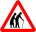
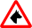
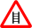
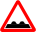

Карта препятствий для велосипедистов. Если вы знаете, что в каком-то месте точно есть бордюр, лестница, припаркованные на тротуаре автомобили, пешеходы и т.д., которые мешают велосипедистам, просто приблизьте карту до 17-18 уровня и отметьте проблему, кликнув мышкой.
Отмечайте все бордюры, не соответствующие строительным нормам. Вкратце: если бордюр выше 5 см — однозначно не соответствует. Если ниже, но на пересечении с проездом во двор — тоже, его там не должно быть вообще. Пандусы — тоже нарушение.
«4.4.8 В местах пересечения пешеходных путей с проезжей частью улиц, дорог и основных проездов высота бортовых камней должна быть не более 0,050 м, при этом не допускается сужение проезжей части; уклон тротуара при спуске к проезжей части должен быть не более 1:10; в местах переходов не допускается применение бортовых камней со скошенной верхней гранью. Пересечения (сопряжения) пешеходных путей со второстепенными проездами и подъездами к домам следует выполнять в одном уровне с выделением их за счет применения покрытий тротуаров и пешеходных дорожек, контрастирующих по материалу и цвету с проезжей частью.» (СНБ 3.03.02-97 «Улицы и дороги городов, посёлков и сельских населённых пунктов»)
| Легенда: | |
|---|---|
| Бордюр | |
 | Припаркованные автомобили |
|  | Пешеходы |
|  | Собаки |
|  | Ступеньки |
|  | Дефекты покрытия |
| Иная проблема | |
 | Исправленная проблема |